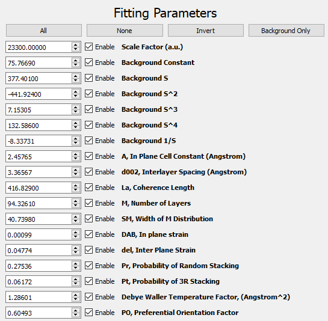
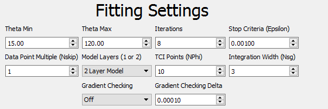
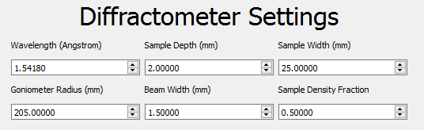
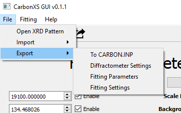
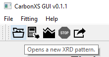
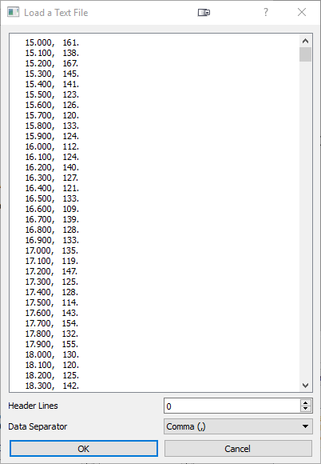
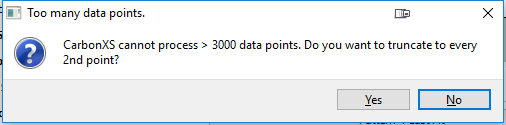
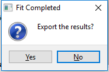
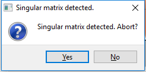

Tutorial
Overview of Fitting Procedure
- User defines settings.
- User loads XRD Pattern.
- Program take settings and writes a CARBON.INP file to the carbonxs folder.
- Program takes the currently loaded pattern and writes a SCAN.DAT file to the carbonxs folder.
- Program calls the compiled CarbonXS program.
- Pattern Calculation Mode: The CarbonXS calculates a pattern given the current fitting parameters without a fit
- Fitting Mode: The CarbonXS program performs an optimization of the fitting parameters with the Levenberg-Marquardt algorithm.
- A plot is generated of the fit results, if calculation / fitting is successful.
- In Fitting Mode, the user is given the option to export the fitting results at the end of the run.
Settings
The values that need to be defined are the Fitting Parameters, the Fitting Settings, and the Diffractometer Settings..
Fitting Parameters

The Fitting Parameters are the values to be refined. They include a scale term, terms for a polynomial background fit, and the physical parameters for the carbon system. The "Enable" boxes indicate whether the parameter is to be refined or left fixed.
Fitting Settings

The Fitting Settings control the fit process.
- Theta Min / Theta Max - Angle window that the refinement will be performed on. If a pattern is loaded, these values will be automatically set for the end points of the pattern.
- Iterations - Maximum number of iterations to perform optimization.
- Stop Criteria (ε) - Minimum change in Χ2 to continue optimization.
- Data Point Multiple - Use 1 to use all data points. Use n > 1 to use every n-th point.
- Model Layers - Use the 1 or 2 layer model.
- TCI Points (N Φ) - Number of points to use in the Tangent Cylinder Integral (TCI).
- Integration Width (NSG) - Number of standard deviations to integrate with about the Bragg rods. Recommended >= 3.
Three buttons above the fit parameters enable the user to toggle the fitting of multiple parameters at once:
- All - Enable fitting of all parameters.
- None - Disable fitting of all parameters.
- Invert - Invert the fitting state all parameters. Enabled parameters become disabled and disabled parameters become enabled.
- Background Only - Enables only the parameters for background fitting.
Diffractometer Settings

The Diffractometer Settings define the geometry of the instrument and sample.
- Wavelength (Å) - Wavelength of x-ray radiation used.
- Sample depth (mm).
- Sample width (mm).
- Goniometer radius (mm).
- Beam Width (mm).
- Sample Density Fraction - The ratio of the sample to the bulk density. Must be between 0 and 1.
Importing and Exporting Settings

The original CarbonXS program coupled the above three types of settings into one CARBON.INP file. In this program, we are able to export sets of Diffractometer Settings, Fitting Settings, and Fitting Parameters. The file format is JSON and is human and machine readable. This is useful if you want to have a set of settings for your own diffractometer and need to mix and match fitting parameters with another setting. You are able to both import from and export to JSON files and from existing CARBON.INP configuration files.
Loading an XRD Pattern
-  - Press this button to open a new XRD pattern for fitting.
Click the folder icon to open an XRD pattern or access this option from the File-Open XRD Pattern menu option.

The XRD pattern may be a text file in a two column format separated by spaces, tabs, or commas. An arbitrary number of header lines is supported. The first column is the 2θ values in degrees and the second column is intensity. The user is prompted to select the number of header lines in their file and select the separator for their data. If the incorrect settings are applied, the following message will be emitted at the console:The following data formats from x-ray diffractometers are also supported:
- Jade MDI format: *.mdi
- Rigaku RAS format: *.ras
- X-Y format: *.xy
After loading a pattern, the graph will be cleared, and the newly loaded data will be plotted. For how to use the graph toolbar, this is covered in Matplotlib's Toolbar Documentation.

Note: Dataset Size Limit

Because of limitations hard coded into the CarbonXS program, fitting cannot be performed on datasets larger than 3000 points. If a dataset has greater than this limit, the program gives the user the option to cull the number of data points by taking the smallest n-th interval. If the user elects not to cull the data, the fit will be performed on the first 3000 data points.
Performing a Calculation or Fit
- - Press this button to perform a pattern calculation without running a fit.
- - Press this button to perform a fit using the Levenberg-Marquardt algorithm.
 - Press this button to abort a fit in progress or if the fitting program freezes.
- Press this button to abort a fit in progress or if the fitting program freezes.
All of these options are available under the fitting menu. Only one fitting and calculation process may run at a time. To perform a fit, a pattern must have been loaded. If a user attempts to begin a fit without a loaded pattern, they will be prompted to load a pattern. Pattern calculation without fitting may be performed without a loaded pattern. When a fit is started, sanity checks on the values and settings are performed and the fit will only proceed when all are satisfied. Fix any erors that appear in the console if sanity checks fail.
{kind=link}
{kind=link}
After the fit or calculation has been successfully completed, a plot of the calculated pattern and the original data is displayed. Pressing the Last Fit Difference button under the graph causes the most recent fit's difference trace to be plotted. Pressing the Pattern + Last Fit button causes the currently loaded pattern and the most recently fit or calculated pattern to be displayed. The options Lock Pattern/Fit Y-Axis and Lock Pattern/Fit X-Axis are used to lock the Y and X axes respectively. The Show Previous Fit button will show the previous fit or calculation as a dashed line on the fit plot.

- - Press this button to export the most recently performed fit results.
After a fit is completed, the user may also export the results. The carbon.out (Information about fitting process including covariance matrix), the carbon.dat (angle, original data, and fit pattern) are copied to a user-selected destination. The user may also export a Jade .mdi file to performed a combined fit using Jade and CarbonXS together.
 - Press this button to go back to the previous fit or calculation.
- Press this button to go back to the previous fit or calculation. - Press this button to go to the next fit or calculation.
- Press this button to go to the next fit or calculation.
Known Problem Scenarios in the Fit Process
A Singular Matrix error is encountered when parameters result in a singular matrix that the program cannot solve. It may be possible to identify the parameter that is responsible and adjust its value or disable it. An SM, Width of the M Distribution parameter that is zero is known to cause this. If the user does not abort the calculation, CarbonXS freezes and the process will have to be killed manually by the abort option.
A Crash in CarbonXS error is encountered when an internal error in CarbonXS causes it to quit prematurely. Scenarios include floating point over and underflow errors. This is detected by the GUI program by CarbonXS emitting exit code 1.
- Unknown conditions may cause a Freeze Condition in CarbonXS where it becomes unresponsive and does not make any further progress in the fit. In this case, the user must stop the process with the abort option. Optimizing too many variables at once may result in this condition.

Keyboard Shortcuts
| Command | Windows | OSX | Linux |
|---|---|---|---|
| Open Documentation | F1 | ⌘ + ? | F1 |
| Open Diffraction Pattern File | Ctrl + O | ⌘ + O | Ctrl + O |
| Calculate Pattern | Ctrl + R | ⌘ + R | Ctrl + R |
| Perform Fit | Ctrl + Shift + R | ⌘ + Shift + R | Ctrl + Shift + R |
| Abort Running Fit | Ctrl + D | ⌘ + D | Ctrl + D |
| Previous Fit/Calculation | Alt + 🡄 | ⌘ + [ | Alt + 🡄 |
| Next Fit/Calculation | Alt + 🡆 | ⌘ + ] | Alt + 🡆 |